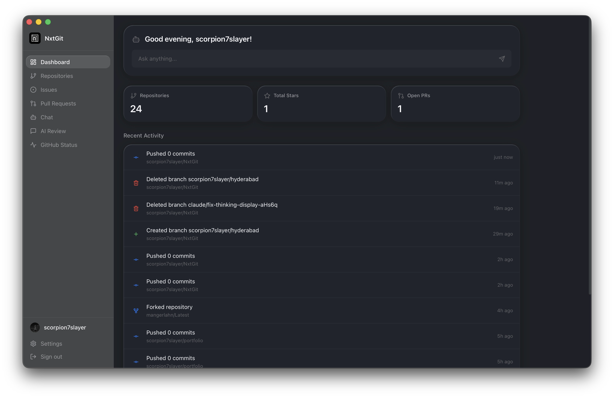

NxtGit
macOS Linux Windows ArchivéUn client GitHub de bureau avec l'IA intégrée : parcourir ses dépôts, relire du code, discuter avec une IA, modifier des fichiers et pousser ses changements, le tout depuis une seule application.

Pourquoi NxtGit ?
J'en avais assez de jongler entre GitHub, mon éditeur et ChatGPT quand je travaillais sur mes projets. NxtGit réunit tout dans une seule fenêtre : les dépôts, les issues, les pull requests, un chat IA qui comprend le code, et un éditeur de fichiers qui commite directement sur GitHub.
L'application tourne nativement sur macOS, Windows et Linux grâce à Tauri : un backend en Rust et une interface en React. Sur macOS Tahoe, elle utilise le style Liquid Glass.
Fonctionnalités
- Tout parcourir : dépôts, fichiers, issues, pull requests, commits, releases, workflows GitHub Actions et profils des contributeurs.
- Discuter avec l'IA : joindre des fichiers ou un dépôt entier comme contexte, avec des réponses en streaming et l'affichage du raisonnement du modèle.
- Relire du code : coller un extrait et obtenir une revue instantanée avec des suggestions sur les bugs, la sécurité et les performances.
- Modifier et commiter : ouvrir un fichier, le modifier dans l'application, écrire un message de commit et pousser, sans terminal.
- Prévisualiser : Markdown rendu, images en ligne et aperçu GitHub Pages pour les fichiers HTML.
- Rester à jour : statut de GitHub, notifications, journal des changements et mises à jour automatiques.
8 fournisseurs d'IA
NxtGit fonctionne avec GitHub Copilot (connexion OAuth), OpenRouter, Anthropic, OpenAI, Ollama (en local, sans clé), Moonshot, Kilocode et MiniMax.
Les clés API sont enregistrées localement, dans le stockage sécurisé du système d'exploitation. Rien ne quitte la machine à part les appels aux API.
Statut du projet
NxtGit est archivé : il n'est plus maintenu, mais le code reste disponible sous licence MIT et la dernière version (v1.1.1) peut toujours être téléchargée pour macOS (Apple Silicon et Intel), Windows et Linux.